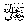

Abu Hurairahsays that Rasulullahsaid, “My ummah has been given five special things that were not given to anyone before them.
The smell from the mouth of a fasting Muslim is sweeter for Allah
than the sweet smell of musk. The fish in the sea ask for forgiveness
for them until they break their fast. Allah 
Note: These five gifts from Allahwere not granted to the (fasting) people before Islam. If only we could truly appreciate how great this gift from Allahreally is, we will sincerely try to get these special favours.
First, we are told that the smell from the mouth of the fasting person is more pleasing to Allahthan the smell of musk.
Fasting is one of the most pleasing forms of worship in the sight of Allahand for this reason a Hadeeth states that for every deed the reward is brought by the Malaaikah, but Allahsays, “The reward for fasting, I Myself will give, because it is for Me alone”. Another report of the same Hadeeth (when read in a different way) says “I Myself become his reward”. And what greater reward can there be for the lover than to meet the Beloved?
In another Hadeeth we read, “Fasting is the door to all other forms of worship of Allah”. This means that, through fasting, the heart is encouraged to other forms of worship. This is the case if the fast is kept properly and is not merely remaining hungry and thirsty.
The second special favour is that the fish in the sea ask for forgiveness for the person who fasts. The purpose here is to explain that many living things make dua for him.
One Hadeeth explains this further, “When Allahloves a person, He says to the angel Jibraeel‘I love that person, so you also love him.’ Jibraeelthen also loves that person and announces in the first heaven that, ‘That person is loved by Allahyou all should also love him.’ Then all the creations of the heavens begin to love him. Then, love for that person spreads all over the earth.” Normally only those who are near to a person seem to love him, but here that love spreads all over, even the animals in the jungle and the fish in the sea do the same. They all then make dua on his behalf.
The third favour given to the fasting persons is that Jannah is decorated for them. The Hadeeth states that at the beginning of every year, Jannah begins to be decorated for Ramadhaan. We know that when an important person is expected to arrive, great care is taken in the preparations for his welcome.
The fourth favour is that evil shayateen (devils) are chained, so evil is much less. One would have expected that, because of the great desire for worship of Allahin the blessed month of Ramadhaan, the shayateen would try just as hard to pull the faithful away from the right path, so that much more evil would be committed. That is not the case. Instead we see so much less evil. How many drunkards do we see, who just because of the blessed month of Ramadhaan, do not drink any wine? How many other sinners we see giving up evil acts during the blessed month of Ramadhaan?
You may wonder that, when the shayateen are chained, how is it that we still see sins being committed, even though in lesser amounts? The reply is that all evil may not necessarily be caused by the evil shayateen. Having for eleven months lived in obedience to the wishes of the shayateen, the doing of evil actions caused by them becomes a habit and so evil is being done in Ramadhaan and also out of Ramadhaan. For this reason we find those who normally commit sins continue to do some of it in Ramadhaan. Thus, even though shayateen have been chained, their effect on us has become so strong that we follow their ways from our own side even in Ramadhaan.
My personal opinion is that not all the shayateen are chained, but only the most evil ones. All of us can see that in Ramadhaan, it does not require a great amount of effort and energy to perform a good act. Neither does it need a great amount of self control and effort to avoid sin, as in other times.
The fifth favour is that forgiveness is granted on the last night of Ramadhaan. Because of this great favour, the Sahaabahthought that this night must be Laylatul Qadr. They knew the great blessings of that night and asked whether it meant Laylatul Qadr. The reply was that it was not. This is just a favour granted for having fasted the entire month of Ramadhaan.